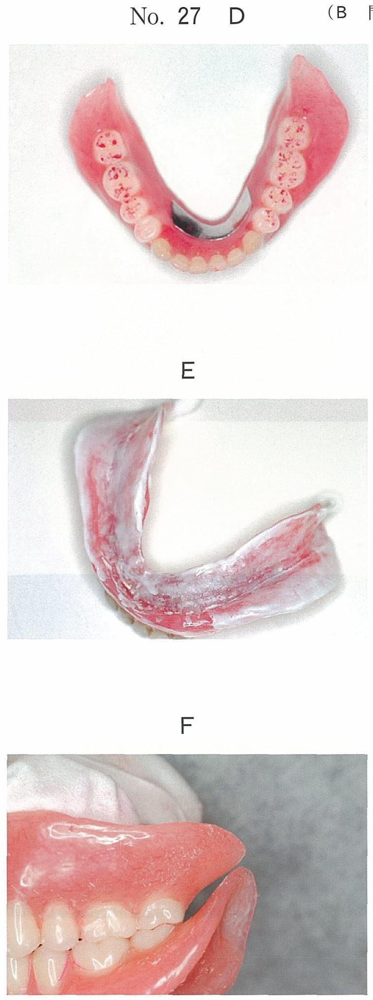
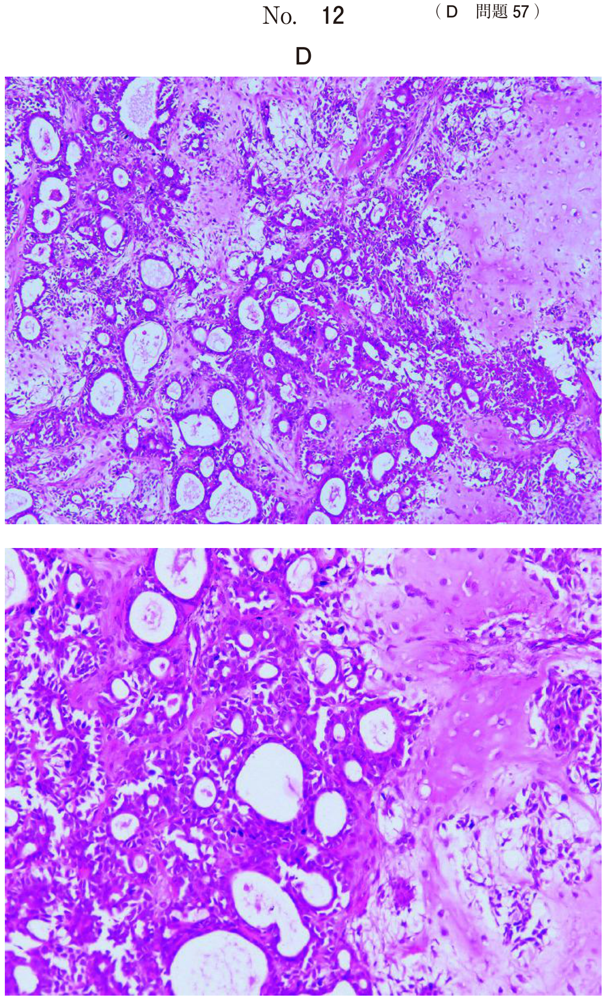
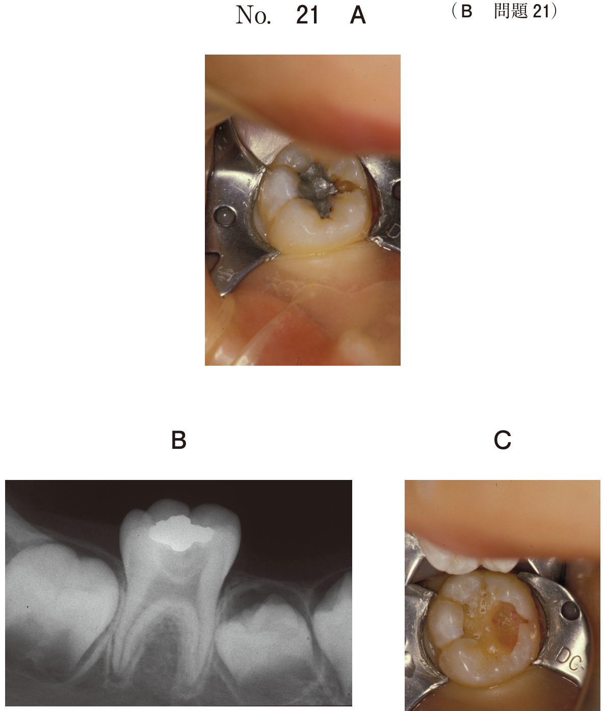
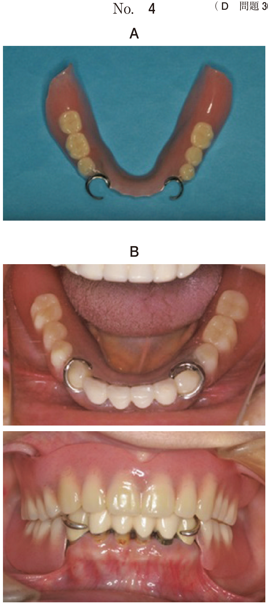
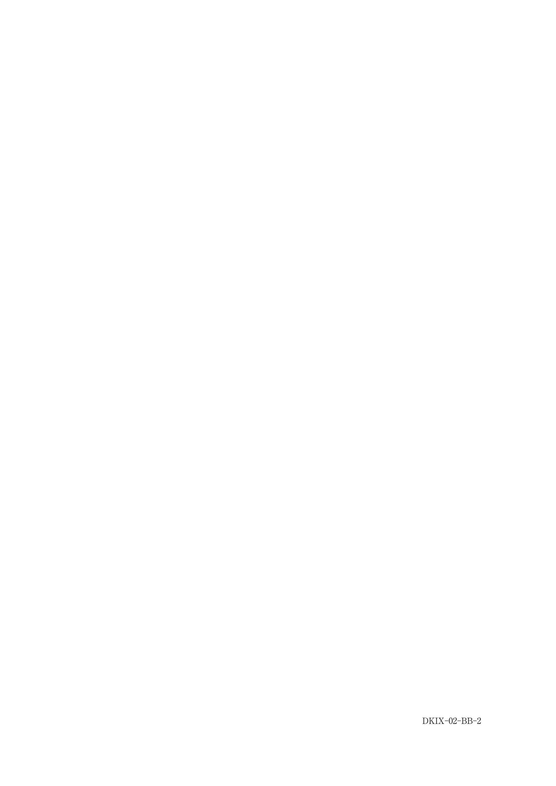
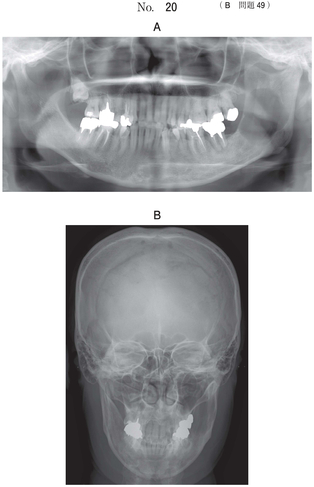
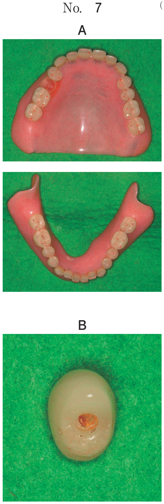

異所萌出
異所萌出とは
異所萌出とは、歯が正常な萌出経路から外れて萌出することをいう。隣在歯の歯根吸収や歯列弓周長の短縮を引き起こす。
第一大臼歯の異所萌出
第一大臼歯は近心傾斜して萌出しやすく、第二乳臼歯の遠心歯根を吸収しながら萌出することがある。
- 影響：第二乳臼歯の歯根吸収、歯列弓周長の短縮
- 処置：萌出方向の改善
処置に用いる器材
- リガチャーワイヤー
- クリップ
- セパレートエラスティック
- 弾線
これらを用いて第一大臼歯を遠心に移動させ、萌出方向を改善する。
6歳の男児。下顎左側第一大臼歯の萌出異常を主訴として来院した。初診時の口腔内写真（別冊No.34A）とエックス線写真（別冊No.34B）とを別に示す。
適切な対応はどれか。1つ選べ。


b ┌6の抜去
c ┌6の遠心移動
d ┌E遠心隣接面の削除
e ┌6遠心部の歯肉弁切除
【解説】第一大臼歯が近心傾斜して第二乳臼歯に食い込んでいる。遠心移動（c○）により萌出方向を改善する。経過観察では第二乳臼歯の歯根吸収が進行する（a×）。
第一大臼歯の萌出経路
第一大臼歯は萌出時に近心傾斜しながら萌出し、その後直立する経路をたどることが多い。
第一大臼歯の萌出経路を図に示す。
頻度が高いのはどれか。1つ選べ。

b イ
c ウ
d エ
e オ
【解説】第一大臼歯は近心傾斜して萌出し、その後直立する経路（イ）が最も頻度が高い。
第一大臼歯の近心傾斜の原因
7歳の男児。初診時の口腔内写真（別冊No.19A）、エックス線画像（別冊No.19B）及び3D-CT（別冊No.19C）を別に示す。
上顎右側第一大臼歯の近心傾斜の原因として考えられるのはどれか。1つ選べ。


b E」の埋伏
c D」の遠心傾斜
d 4」の歯胚の位置異常
e 7」の歯胚の位置異常
【解説】第二乳臼歯（E）の埋伏により、第一大臼歯が近心傾斜している（b○）。第二乳臼歯が正常位置にないため、第一大臼歯の萌出経路が阻害されている。
埋伏歯への対応
埋伏歯は隣在歯の傾斜移動による空隙の縮小や対合歯の挺出を引き起こす。
- 開窓牽引：自然萌出が期待できない場合
- 障害物（過剰歯など）があれば先に除去
- 開窓による誘導で自然萌出を促す
8歳の男児。下顎右側第一大臼歯が生えてこないことを主訴として来院した。学校の歯科健診で指摘されたという。初診時の口腔内写真（別冊No.32A）とエックス線写真（別冊No.32B）を別に示す。
適切な対応はどれか。1つ選べ。


b 下顎右側第二乳臼歯の抜去
c 下顎右側第一大臼歯の開窓牽引
d 下顎右側第一大臼歯の再植
e 下顎右側第一大臼歯の抜去
【解説】第一大臼歯が埋伏している。自然萌出が期待できないため開窓牽引（c○）を行う。抜去は最終手段であり、保存を優先する。
過剰歯による萌出異常
過剰歯は上顎前歯部（50〜90%）に好発し、上顎正中部のものを「正中歯」という。永久歯過剰歯の3/4は埋伏する。
過剰歯による影響
- 正中離開
- 歯列不正（捻転、転位）
- 正常歯の埋伏
- 歯根吸収
- 萌出方向の異常
- 歯根の形成障害
乳歯列後期にエックス線検査で上顎正中部に埋伏過剰歯を認めた。
そのままにしていた場合に上顎中切歯に生じる可能性が高いのはどれか。2つ選べ。
b 歯冠の形態異常
c 歯冠の色調異常
d 歯根の形成障害
e 萌出方向の異常
【解説】埋伏過剰歯は正常歯に萌出方向の異常（e○）や歯根の形成障害（d○）を引き起こす。骨性癒着は起こらない（a×）。骨性癒着は歯根膜の損傷が原因であり、過剰歯の存在とは関係しない。
8歳の男児。片方の前歯が生えてこないことを主訴として来院した。診察の結果、└Aの抜歯後に経過観察をしたが、└1は萌出しなかった。初診時の口腔内写真（別冊No.8A）、エックス線画像（別冊No.8B）及び└Aの抜歯後のエックス線画像（別冊No.8C）を別に示す。
次に行うのはどれか。1つ選べ。


b └1の開窓牽引
c └2の開窓牽引
d 1」の近心移動
e 上顎正中埋伏過剰歯の抜去
【解説】埋伏過剰歯が萌出障害の原因となっている。障害物（過剰歯）を先に除去（e○）してから、必要に応じて開窓牽引を検討する。
7歳の男児。上顎前歯部の異常を主訴として来院した。初診時の口腔内写真（別冊No.2A）とエックス線写真（別冊No.2B）とを別に示す。
原因として考えられるのはどれか。1つ選べ。


b 過剰歯
c 異常結節
d 異常咬耗
e 上顎左側側切歯の異所萌出
【解説】上顎前歯部の正中離開や歯の位置異常の原因として過剰歯（b○）が最も考えられる。X線写真で埋伏過剰歯の有無を確認する。
上顎犬歯の埋伏
上顎犬歯は萌出経路が長く、埋伏しやすい。乳犬歯の交換異常を放置すると永久犬歯の埋伏につながる。
10歳の男児。上顎右側乳犬歯部の交換の異常を近医で指摘され来院した。初診時のエックス線写真（別冊No.3）を別に示す。
放置すると生じると考えられるのはどれか。2つ選べ。

b 上顎右側乳犬歯の骨性癒着
c 上顎右側乳犬歯の晩期残存
d 上顎右側犬歯の低位唇側転位
e 上顎右側第一小臼歯の近心傾斜
【解説】乳犬歯の交換異常を放置すると、乳犬歯の晩期残存（c○）と永久犬歯の埋伏（a○）が生じる。骨性癒着は放置しても起こらない（b×）。
10歳の男児の口腔内写真（別冊No.30A）とエックス線画像（別冊No.30B）を別に示す。
埋伏歯の牽引にあたり、抜去すべき歯はどれか。1つ選べ。


b 2」
c └E
d E┐
e 6┐
【解説】埋伏歯（上顎犬歯）の牽引にあたり、萌出スペースを確保するため側切歯（2」）を抜去する（b○）。牽引経路上の障害となる歯を除去する必要がある。
乳歯外傷と萌出位置異常
乳歯外傷による後継永久歯への影響として考えられるのはどれか。4つ選べ。
b 歯根形成不全
c 歯根内部吸収
d 歯胚発育停止
e 萌出位置異常
【解説】乳歯外傷は後継永久歯歯胚に影響を与える。萌出遅延（a○）、歯根形成不全（b○）、歯胚発育停止（d○）、萌出位置異常（e○）が生じうる。歯根内部吸収は乳歯外傷とは関係しない（c×）。内部吸収は歯髄の炎症によるものである。
保隙装置と成長
5歳の女児。定期健診時に保隙装置の適合を確認し修正を行った。修正前の口腔内写真（別冊No.11A）と修正後の装置の写真（別冊No.11B）を別に示す。
修正を行った理由はどれか。1つ選べ。


b 着脱性の向上
c 歯石沈着の予防
d 異所萌出の回避
e 成長抑制の防止
【解説】保隙装置が顎の成長を妨げないよう修正を行った。成長抑制の防止（e○）が目的である。小児は成長期にあるため、装置が成長を阻害しないよう定期的な確認と修正が必要。
まとめ
| 状態 | 原因 | 処置 |
|---|---|---|
| 第一大臼歯の異所萌出 | 近心傾斜 | 遠心移動（リガチャーワイヤー等） |
| 埋伏歯 | 萌出障害 | 開窓牽引（障害物除去が先） |
| 過剰歯による異常 | 上顎正中部に好発 | 過剰歯の抜去 |
| 上顎犬歯の埋伏 | 交換異常の放置 | 開窓牽引、スペース確保 |